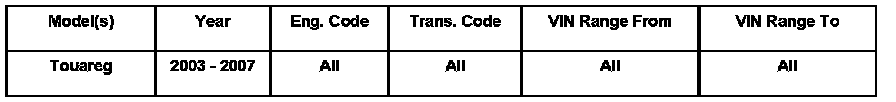
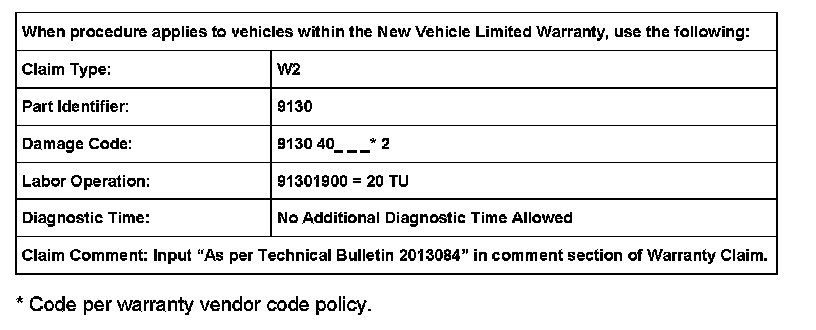
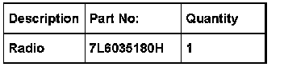

Audio System - CD Won't Eject/Face Plate Buttons Peeling
ConditionCustomer States, CD Not Ejecting or Radio Face Plate Buttons Peeling

91 06 08 Oct. 20, 2006 2013084
Technical Background
CD Not Ejecting or Radio Face Plate Buttons Peeling.
Production Solution
New Radios installed.
Service
Tool Requirements
VAS 5051 or VAS 5052 (with Base CD V.10.01 and the Brand CD V.10.70.00 or higher).
Vehicle Requirements
Battery MUST have a minimum no-load charge of 12.5 V (failure to maintain voltage during update process can lead to ECM failure) (it is advised to use an approved battery charger to maintain battery voltage).
VAS 5051: connected to vehicle and to 110 V AC Power supply at all times during procedure.
VAS 5052: connected to vehicle with battery requirements met.
- Connect the VAS 5051 or VAS 5052 to the vehicle.
- Verify the radio part number using vehicle self-diagnosis.
- Select Radio and part number will be at the right top of the screen.
If radio part number is anything other than 7L6035180H*:
- Install radio with Part No. 7L6035180H
See Repair Manual Group 91 in ElsaWeb for removal and installation instruction.

Warranty
Required Parts and Tools

No Special Tools required.